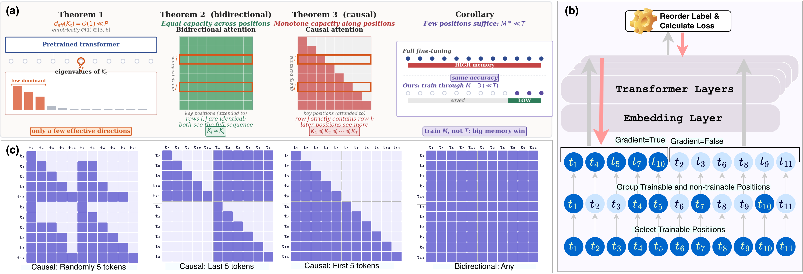
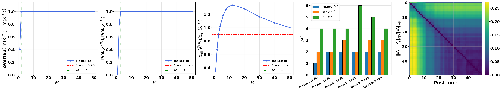
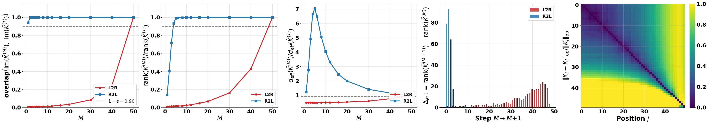
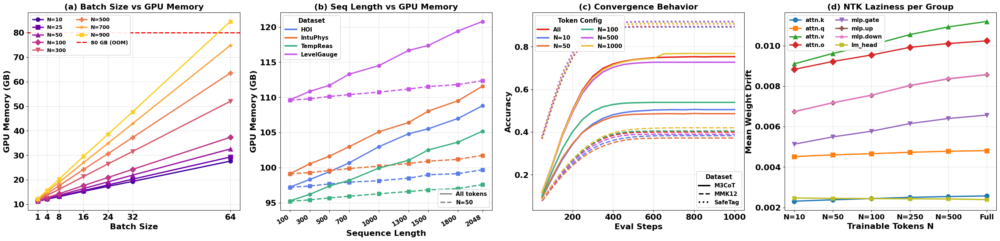
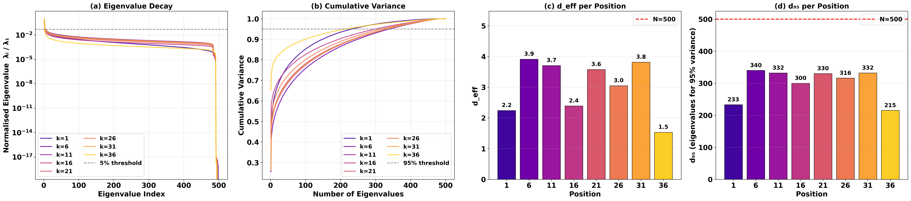
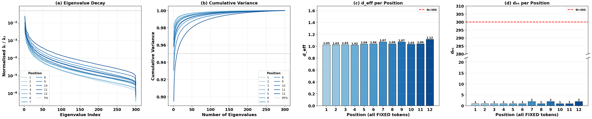

torch.no_grad()
Causal models: later positions carry the richest signal (Theorem 3), so train the last M.
Fine-tuning a transformer stores activations at every token position, and that cost grows linearly with sequence length. We show, through a Neural Tangent Kernel lens, that each position is a low-dimensional bottleneck, so you only need to backpropagate through a small, architecture-dependent subset of positions. The full forward pass stays intact, and inference is unchanged.

Fine-tuning large transformers routes gradients through every token position, paying the cost in activation memory that scales linearly with sequence length and dominates the GPU budget. Existing efficient methods reduce the parameter side (low-rank adapters, prefix tuning, weight-decomposed updates) but leave the activation footprint untouched.
We present the Token Hypothesis, a memory-efficient fine-tuning procedure motivated by a Neural Tangent Kernel analysis of how fine-tuning signal is distributed across token positions. We prove that every position is a low-dimensional capacity bottleneck whose width does not grow with the model, that positions with aligned hidden-state geometry are interchangeable in bidirectional models, and that causal positions form a monotone capacity chain in which later positions strictly dominate earlier ones.
The analysis provides an assumption-qualified criterion for estimating how many positions are needed and which ones, using quantities computable from forward passes alone. We translate this into a procedure that backpropagates through only a small subset of positions while running the full forward pass over the rest. Empirically, it matches or exceeds full-sequence fine-tuning in nearly all settings across six task families and five backbones, reduces activation memory substantially, and composes cleanly with LoRA and DoRA.
Let $\phi_t(x) := \nabla_\theta o_t(x;\theta_0)$ be the position-$t$ feature map and $K_t[n,m] := \langle \phi_t(x^{(n)}), \phi_t(x^{(m)})\rangle$ its Gram matrix. Under the NTK regime, training through position $t$ is kernel regression with $K_t$, so everything follows from how $K_t$ behaves across positions and architectures.
Training through one position confines every update to a subspace whose dimension is at most $\mathrm{rank}(K_t) \le \min(N,P)$, independent of model size. Measured effective rank is tiny: $d_{\mathrm{eff}}(K_t)\in[1.5,\,5.2]$.
When every position sees the full sequence, positions with aligned hidden-state geometry yield nearly identical fine-tuned predictors. The gap is bounded by quantities you can compute from forward passes alone, so choosing positions reduces to sampling.
Under a contraction condition linking adjacent hidden states, Gram matrices form a monotone chain up to a vanishing slack: later positions carry at least as rich a gradient signal as earlier ones. The natural subset is the last M.
Define $M^\ast := \min\{M : \mathrm{Im}(K^{(M)}) = \mathrm{Im}(K^{(T)})\}$, the fewest positions whose combined Gram matrix spans the same prediction space as the full sequence. Its value is set by the architecture.


Theory becomes a few lines of code. Every per-token module (linear projections, embeddings, LayerNorm and RMSNorm) is wrapped so that its input is split along the sequence axis.
torch.no_grad(), so their activations never enter the computation graph.Attention scores still run on the full rejoined sequence, which keeps compatibility with SDPA and FlashAttention. The method also stacks with gradient checkpointing.
class TokenHypothesisWrap(nn.Module): def __init__(self, base, delta, M): super().__init__() self.base, self.delta, self.M = base, delta, M def forward(self, X): # X: [B, T, d] Tf = X.size(1) - self.M # frozen length Xf, Xp = X[:, :Tf], X[:, Tf:] with torch.no_grad(): # no activations kept Yf = self.base(Xf) Yp = self.base(Xp) + self.delta(Xp) # full grad return torch.cat([Yf, Yp], dim=1) # delta = 0 → full fine-tuning # delta = B @ A → LoRA # delta = DoRA update → DoRA
Every run in a (modality, regime) pair shares the same learning rate, batch size, schedule and GPUs; the only variable is $M$. Pick a setting below to see accuracy and total GPU memory as $M$ grows, with the full-sequence baseline dashed. Numbers are from Table 1 (LLaMA-3-8B for text, Qwen3-VL-8B for VQA and video).
At matched token budgets and identical memory, the Token Hypothesis (TH) leads TokenTune (TT) and TokenSeek (TS) in most cells. It does this without TokenSeek's pre-scoring pass over the training set or its per-model grid search: it just applies the last-M rule.
Commonsense reasoning on LLaMA-3-8B. GPU = peak allocated memory (GB), shared across the three methods at each budget. Bold = best in each benchmark group.
LLaMA-3-8B on LongAlpaca-12k at $T=8192$ on 8×A100-80GB. Long-form generation needs a larger budget, since the required $M$ scales with the length of the supervised span.
| Tokens | M/T | GPU (GB) | Time (min) | PPL ↓ |
|---|---|---|---|---|
| All | 1.00 | 292.8 | 301.5 | 8.14 |
| 500 | 0.06 | 211.0 −81.8 | 230.2 −71.3 | 9.12 +0.98 |
| 1000 | 0.12 | 215.4 −77.4 | 239.5 −62.0 | 9.04 +0.90 |
| 2000 | 0.24 | 224.4 −68.4 | 248.4 −53.1 | 8.61 +0.47 |
| 5000 | 0.61 | 276.4 −16.4 | 286.7 −14.8 | 8.11 −0.03 |
Savings are additive with gradient checkpointing: on top of GC, M = 2500 cuts memory from 193.1 to 182.9 GB while perplexity improves slightly (8.103 vs 8.143).
On RoBERTa-base (GLUE) and ViT-L/16 (image classification), accuracy saturates at M = 50–100, consistent with Theorem 2: in bidirectional models, small subsets of aligned positions suffice.



Activation memory grows linearly in batch size with slope ∝ M, so a smaller M buys a bigger batch.
Fixing M = 50 decouples activation memory from T, up to 97.6% saved at T = 2048 on video.
M = 50–100 matches full-sequence accuracy on LLaVA-OneVision-7B over 1000 eval steps.
Mean weight drift stays below 0.011 across every parameter group and every M.
M = 100 on ARC-C cuts forgetting on four untrained benchmarks by about 4× vs. full FT.
@inproceedings{kowsher2026token,
title = {Where You Backpropagate Matters: Token Hypothesis
for Memory-Efficient Fine-Tuning},
author = {Kowsher, Md and Chen, Chen},
booktitle = {Advances in Neural Information Processing Systems},
year = {2026}
}